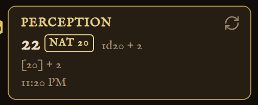

The Trap
Dex save · NAT 1
FOR OBSIDIAN
Rollwright
Dice that roll inside your notes.
Write dice: 1d20 + 5 in a sentence. Click, and the roll tumbles and lands right there. A natural 20 lands in gold, a natural 1 in red. Every throw is kept in your session log.
FREE IN OBSIDIAN COMMUNITY PLUGINS
Parchment and Arcane: optional skins
Made by Thijs at Dortus
REAL PLUGIN SCREENSHOTS · NOTE STYLE IS A USER SNIPPET